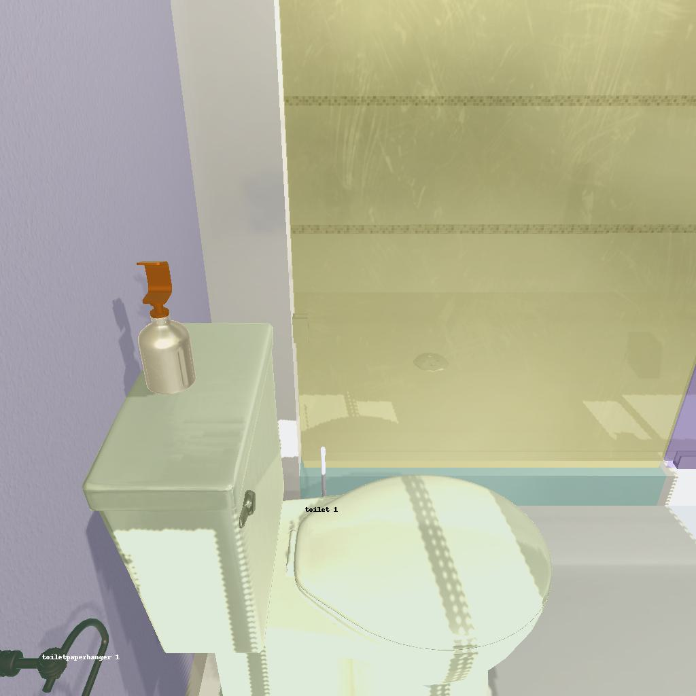
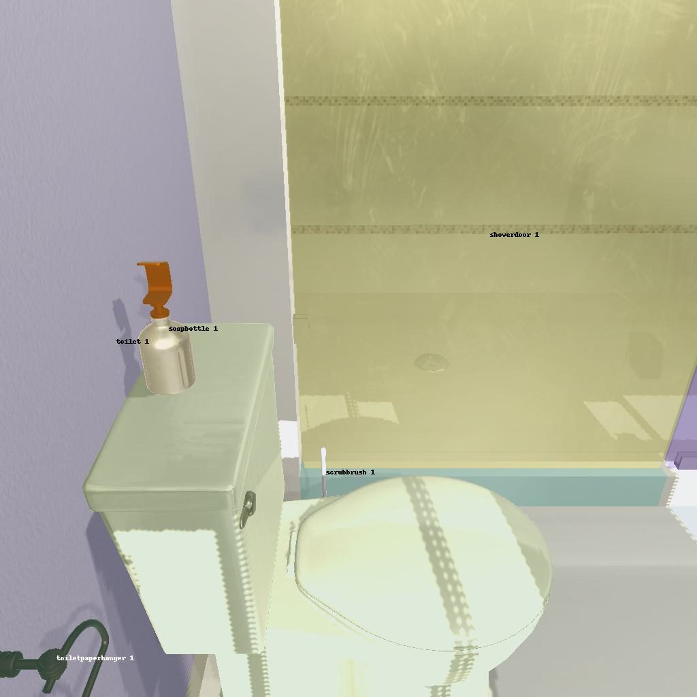

---------------------------------------------------------task: 28---------------------------------------------------------
--------------------------------------------------------------------------------------------------------------------------------------------------------------------
--------------------------------------------------------------------------------------------------------------------------------------------------------------------
Step:--------------------------------------------------------------------------3-------------------------------------------------------------------------------
----------------------------------------
VLM Prompt:
Image1:
Image2:
Image3:
**Instruction**
1. Analyze the provided image to identify all visible household objects, focusing on those relevant to the task description "put two spraybottle in toilet."
2. Use the analysis of the image and the task hint "The agent must find an object of the desired type, pick it up, find the correct location to place it, put it down there, then look for another object of the desired type, pick it up, return to previous location, and put it down there with the other object." to answer the question: what is the most reasonable action in the choices for the task description "put two spraybottle in toilet"?
4. Decide and write the answer using the template: The answer is: (i): , where i is the real number. If there is no desired object in the image, search every place based on **Initial Observation** to find the object. And if no one is exactly correct, choose a similar answer.
**Initial Observation**
You are in the middle of a room. Looking quickly around you, you can see bathtub (1), bathtubbasin (1), cart (1), sink (1), garbagecan (1), sinkbasin (1), countertop (1), drawer (1-4), toilet (1), toiletpaperhanger (1)
**Answer Choices**
(1): go to bathtub 1
(2): go to bathtubbasin 1
(3): go to cart 1
(4): go to sink 1
(5): go to garbagecan 1
(6): go to sinkbasin 1
(7): go to drawer 1
(8): go to drawer 2
(9): go to drawer 3
(10): go to drawer 4
(11): go to toiletpaperhanger 1
(12): take tissuebox 1 from countertop 1
(13): take toiletpaper 1 from countertop 1
(14): take spraybottle 1 from countertop 1
(15): take handtowel 1 from countertop 1
(16): take candle 1 from countertop 1
(17): examine countertop 1
**Answer**
Let's think step by step by following the instructions.
----------------------------------------
----------------------------------------
Original Response:
The task is to "put two spraybottle in toilet." Based on the initial observation, we can see different household objects. From the provided images, we can see that Image3 shows a spraybottle on the countertop. This is relevant to the task at hand because we need to find spraybottles.
Following the task hint, the agent must first find an object of the desired type, which in this case is a spraybottle. Since we can see a spraybottle on the countertop in Image3, the most reasonable action would be to take the spraybottle from the countertop.
Looking at the answer choices, the action that corresponds to taking the spraybottle from the countertop is (14): take spraybottle 1 from countertop 1.
The answer is: (14): take spraybottle 1 from countertop 1.
----------------------------------------
----------------------------------------
>>> Refine Original VLM Response and Get Pure Action: take spraybottle 1 from countertop 1
----------------------------------------
-----------------------------------------------------------------
Running time: 10.660395860671997 seconds
Total Money: 17.98721
-----------------------------------------------------------------
-----------------------------------------------------------------
Text Observation:You pick up the spraybottle 1 from the countertop 1.
-----------------------------------------------------------------
UNSUCCEED